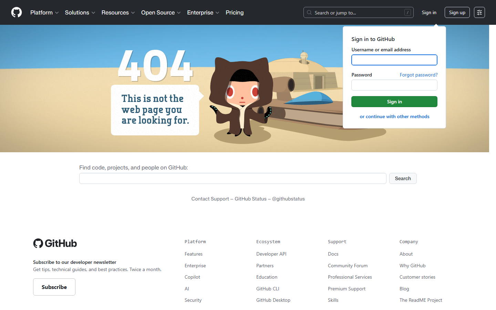
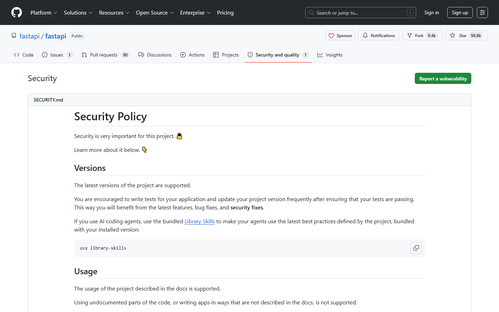

第十四课：安全与权限
时长：25 分钟 | 前置：第八课（PR 生命周期） | P0 词条：14 个 | 覆盖 UI 元素：16 个
学习目标
学完这节课，你能：
- 设置分支保护规则（Branch Protection Rule）
- 配置 CODEOWNERS 自动指定 Review 人
- 看懂 Security 标签下的 Dependabot 和 Secret scanning
- 理解仓库的几种权限级别
0. 开场（1 min）
画面：仓库的 Settings 页面

旁白：
"前几节课我们学了怎么用 GitHub 协作。但还有最后一个重要环节——安全。
如果你维护一个开源项目，你不能让任何人随便往 main 分支 push 代码。你需要设置规则：必须有人 Review、必须 CI 通过、某些文件必须特定的人审核。
这些都在仓库 Settings 里搞定。"
1. 仓库权限级别（3 min）
画面：Settings → Collaborators and teams（协作人员与团队）

1.1 权限级别
| 级别 | 英文 | 能做什么 |
|---|---|---|
| Read | Read | 只能看代码，不能改任何东西 |
| Triage | Triage | 可以管理 Issue 和 PR（打标签、关闭等），但不能写代码 |
| Write | Write | 可以推送代码、创建分支 |
| Maintain | Maintain | Write + 可以管理一些设置（但不能删仓库） |
| Admin | Admin | 完全控制，包括删除仓库、改设置 |
给协作者权限时：给最小权限。能 Read 就别给 Write，能 Write 就别给 Admin。
1.2 Collaborators（协作者）页面
| 元素 | 说明 |
|---|---|
| Add people | 添加协作者（输入用户名或邮箱） |
| 人员列表 | 每个人旁边显示权限级别 |
| 下拉框 | 修改某个人的权限 |
| Remove | 移除协作者 |
2. 分支保护规则（Branch Protection Rule）（8 min）
画面：Settings → Branches（分支）
旁白：
"分支保护是 GitHub 上最重要的安全设置。规则一句话概括：'main 分支不能直接 Push，必须通过 PR，必须有人 Review'。"
2.1 进入分支保护设置
| 路径 | 操作 |
|---|---|
| Settings → Branches | 左侧或顶部标签进 Branches |
| Add branch protection rule | 创建新规则 |
| Branch name pattern | 输入要保护的分支名，比如 main 或 release/* |
2.2 分支保护规则选项（逐项讲解）
画面：分支保护规则编辑页面，从上到下
| 开关 | 英文 | 中文含义 |
|---|---|---|
| ☑ | Require a pull request before merging | 合并前必须通过 PR |
| ☑ | Require approvals | （在 PR 规则展开后）需要 N 个审批 |
| ☑ | Dismiss stale review approvals when new commits are pushed | 有新提交时之前的 Approve 作废 |
| ☑ | Require status checks to pass before merging | 合并前 CI 必须通过 |
| ☑ | Require branches to be up to date before merging | 分支必须和 main 保持同步才能合并 |
| ☑ | Require conversation resolution before merging | 所有 PR 讨论必须标记为 Resolved |
| ☑ | Require signed commits | 要求签名提交（进阶，新手不用开） |
| ☑ | Require linear history | 要求线性历史（禁止 Merge commit） |
| ☑ | Do not allow bypassing the above settings | 不允许任何人绕过规则（包括管理员） |
| ☑ | Restrict who can push to matching branches | 限制谁能直接 push（白名单） |
| ☑ | Allow force pushes | 允许强制推送（强烈建议不开） |
| ☑ | Allow deletions | 允许删除分支（强烈建议不开） |
2.3 推荐配置（开源项目标准方案）
| 配置项 | 推荐设置 |
|---|---|
| Require a pull request before merging | ✅ 开启 |
| Require approvals | ✅ 开启，至少 1 人 |
| Dismiss stale reviews | ✅ 开启 |
| Require status checks | ✅ 开启（如果你有 CI） |
| Require conversation resolution | ✅ 开启 |
| Do not allow bypassing | ✅ 开启 |
| Allow force pushes | ❌ 关闭 |
| Allow deletions | ❌ 关闭 |
操作演示：
【录屏】Settings → Branches → Add rule → 输入 main → 配置保护和审批 → Create → 演示效果：直接 push 到 main 被拒绝
3. CODEOWNERS（代码所有者）（5 min）
画面：创建一个 .github/CODEOWNERS 文件
旁白：
"CODEOWNERS 可以指定'某个文件或目录归谁管'。当有人修改这些文件时，指定的代码所有者会自动成为 PR 的 Reviewer。"
3.1 CODEOWNERS 文件格式
文件路径：.github/CODEOWNERS（注意大写、全大写、没有后缀）
| 格式 | 含义 |
|---|---|
* @username |
所有文件归 @username 管 |
*.js @frontend-team |
所有 JS 文件归 @frontend-team |
/src/ @alice @bob |
/src 目录归 @alice 和 @bob 共同管 |
/docs/*.md @docs-team |
docs 目录下的 md 文件归 @docs-team |
*.py @python-reviewer |
所有 py 文件归 @python-reviewer |
3.2 CODEOWNERS 生效规则
| 规则 | 说明 |
|---|---|
| 最后匹配生效 | 从上往下匹配，后面的规则覆盖前面的 |
| @用户名 | 指定个人 |
| @团队名 | 指定整个 Team（需要组织下有 Team） |
| 邮箱 | 也可以用邮箱，但 @用户名更常用 |
| 必须要有写权限 | CODEOWNERS 里的人必须在仓库有写权限 |
操作演示：
【录屏】创建
.github/CODEOWNERS→ 写* @你的用户名→ 提交 → 演示：创建一个 PR → 看 Reviewer 自动添加
4. Security 标签（5 min）
画面：点击仓库顶部 Security 标签
4.1 Security 页面概述
| 区域 | 英文 | 说明 |
|---|---|---|
| 顶部状态 | Security overview | 安全概览：有没有已知漏洞 |
| 左侧菜单 | Security advisories | 安全公告 |
| 左侧菜单 | Dependabot alerts | 依赖漏洞警报 |
| 左侧菜单 | Secret scanning | 密钥扫描 |
4.2 Dependabot（依赖机器人）
| 概念 | 说明 |
|---|---|
| 是什么 | GitHub 的自动依赖检查机器 |
| 做什么 | 扫描你项目用的第三方库有没有已知安全漏洞 |
| 发现了怎么办 | 自动发警报 + 自动提 PR 更新依赖版本 |
| Alert 格式 | 显示哪个依赖、哪个版本有漏洞、严重程度（Critical/High/Medium/Low） |
4.3 Dependabot 警报解读
| 元素 | 说明 |
|---|---|
| Critical（红色） | 严重漏洞，尽快修 |
| High（橙色） | 高危 |
| Medium（黄色） | 中危 |
| Low（灰色） | 低危 |
| 点击进入 | 查看详情：哪个文件里的哪个包、建议升级到哪个版本 |
| Create Dependabot security update | 让 Dependabot 自动帮你升级 |
4.4 Secret scanning（密钥扫描）
| 概念 | 说明 |
|---|---|
| 是什么 | 检查代码里有没有不小心提交的密钥/密码/API Token |
| 扫描什么 | AWS Key、GitHub Token、数据库密码、各种云服务的密钥 |
| 发现了怎么办 | 立即发邮件通知 + Security 标签里显示警报 |
| 怎么处理 | 1. 立即在对应平台吊销密钥 2. 从 Git 历史中删除 3. 用新密钥替换 |
警告：一旦密钥被提交到公开仓库，哪怕只公开了几秒钟，都应该视为已泄露，必须立即吊销。
5. 其他安全相关设置（2 min）
5.1 Settings → General
| 设置项 | 说明 |
|---|---|
| Default branch | 默认分支名称（建议 main） |
| Auto-merge | 是否允许自动合并（CI 过了自动 Merge） |
| Allow merge commits / Squash merging / Rebase merging | 允许哪些合并方式 |
| Automatically delete head branches | PR 合并后自动删除源分支 |
5.2 Settings → Actions → General
| 设置项 | 说明 |
|---|---|
| Actions permissions | 控制哪些 Action 可以运行（第三方 Action 有风险） |
| Fork pull request workflows | 是否允许 Fork 来的 PR 运行 CI（有安全风险） |
6. 安全最佳实践总结（2 min）
- main 分支必须保护：哪怕只有你一个人，也养成习惯
- 永远不要提交密钥：
.env文件加入.gitignore - 定期查看 Dependabot 警报：别等生产环境被攻击了才修
- 给协作者最小权限：能 Write 就不给 Admin
- 开启 2FA（双因素认证）：Settings → Password and authentication → Enable 2FA
- Fork 来的 PR 谨慎运行 CI：恶意代码可以通过 CI 窃取密钥
课后作业
- 在自己仓库的 Settings → Branches 里创建分支保护规则：
- 要求 PR 才能合并
- 要求至少 1 个 Approve
- 创建
.github/CODEOWNERS文件，把自己设为所有代码的 Owner - 点进仓库 Security 标签，确认有没有 Dependabot 警报
- 在 Settings → Password and authentication 里检查是否开启了 2FA
本课术语速查
{.glossary-table}
| 英文 | 中文 | 出现位置 |
|---|---|---|
| Collaborator | 协作者 | Settings → Collaborators |
| Permission | 权限 | 每个协作者旁边 |
| Read / Triage / Write / Maintain / Admin | 权限级别 | 添加协作者时选 |
| Branch protection rule | 分支保护规则 | Settings → Branches |
| Require a pull request before merging | 合并前必须通过 PR | 保护规则选项 |
| Require approvals | 需要审批 | 保护规则 PR 子选项 |
| Status checks | 状态检查（CI） | 保护规则选项 |
| CODEOWNERS | 代码所有者 | .github/CODEOWNERS 文件 |
| Dependabot | 依赖机器人 | Security 标签 |
| Vulnerability | 安全漏洞 | Dependabot 警报 |
| Critical / High / Medium / Low | 严重程度分级 | Dependabot 警报 |
| Secret scanning | 密钥扫描 | Security 标签 |
| 2FA (Two-factor authentication) | 双因素认证 | Settings → Password and authentication |